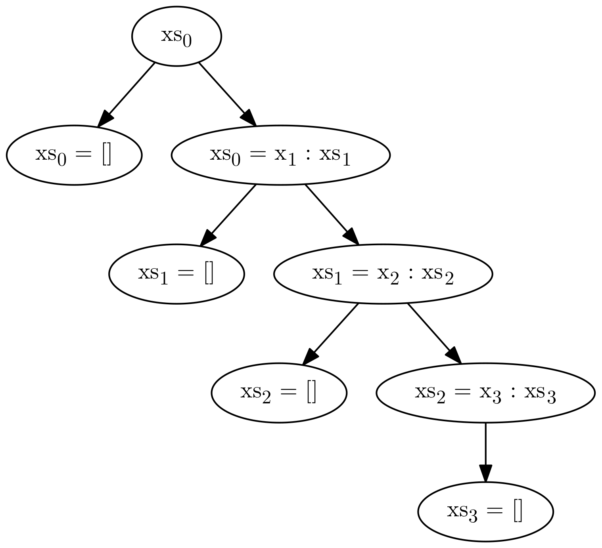

Automated Specification-Based Testing
Eric Seidel
eseidel@cs.ucsd.edu
A Binary Search Tree Library
data Tree
= Leaf
| Node Int Tree Tree
insert :: Int -> Tree -> Tree
delete :: Int -> Tree -> Tree
Testing
Two key questions to answer when testing:
- How to provide inputs?
- How to check outputs?
Standard Practice
Programmer specifies inputs and outputs
insert 1 Leaf
== Node 1 Leaf Leaf
insert 1 (Node 2 Leaf Leaf)
== Node 1 Leaf (Node 2 Leaf Leaf)
hope that these tests generalize!
Outline
- Black-box testing
- White-box testing
- Type-targeted testing
Black-box testing
- Given a specification of expected behavior
- but no knowledge of internals
- Generate many inputs and validate against spec
prop_insert_elem x t = x `elem` insert x t
prop_insert_bst x t = isBST (insert x t)
SmallCheck
data Tree
= Leaf
| Node Int Tree Tree
instance Serial Tree where
series = cons0 Leaf \/ cons3 Node
ghci> smallCheck 3 prop_insert_bst
Failed test no. 4.
there exist 0, Node 0 Leaf (Node 0 Leaf Leaf) such that
condition is false
insert doesn’t accept just any tree
Testing insert: Preconditions
prop_insert_bst x t
= isBST t ==> isBST (insert x t)
ghci> smallCheck 3 prop_insert_bst
Completed 567 tests without failure.
But 434 did not meet ==> condition.
How small?
ghci> smallCheck 4 prop_insert_bst
How small?
ghci> smallCheck 4 prop_insert_bst
..........................................................
Exponential blowup in input space confines search to very small inputs!
- Can abuse laziness to filter equivalent inputs (Lazy SmallCheck, Korat)
- but must be careful how you structure filtering predicate
- e.g. should binary-search tree check ordering or balancing first?
QuickCheck
- provides DSL for writing random value generators
instance Arbitrary Tree where
arbitrary = oneof [ leaf, node ]
where
leaf = return Leaf
node = do x <- arbitrary
l <- arbitrary
r <- arbitrary
return (Node x l r)
- properties specified as with SmallCheck
Testing insert: QuickCheck
ghci> quickCheck prop_insert_bst
+++ OK, passed 100 tests.
How is this possible? SmallCheck showed that input domain is very sparse!
Testing insert: QuickCheck
prop_insert_bst x t
= isBST t ==> collect (size t) (isBST (insert x t))
ghci> quickCheck prop_insert_bst
+++ OK, passed 100 tests:
73% 0
21% 1
6% 2
Testing insert: QuickCheck
prop_insert_bst_nontrivial x t
= isBST t && size t > 1 ==> collect (size t) (isBST (insert x t))
ghci> quickCheck prop_insert_bst
*** Gave up! Passed only 37 tests (100% 2).
Input domain is too sparse, QuickCheck cannot generate trees with more than 2 elements!
Testing insert: Custom Generators
newtype BST = Tree
instance Arbitrary BST where
arbitrary = ...
prop_insert_bst x (BST xs)
= isBST (insert x xs)
Must define a new type/generator for each precondition!
Recap
- brute-force enumeration of inputs suffers from input explosion
- random generation enables testing larger inputs
- sampling from a uniform distribution provides better case for generalizing outcome
- but requires custom generators for preconditions
Outline
- Black-box testing
- White-box testing
- Type-targeted testing
White-Box Testing
- Given program implementation
- Try to break it (i.e. make it crash)
- avoid input explosion by enumerating program paths (via symbolic execution)
- aim for 100% coverage as quickly as possible
A Primer on Symbolic Execution
- originally envisioned as static-analysis technique
- map variables to symbolic expressions instead of concrete values
- construct path condition describing constraints to trigger current path
f x y
= let z = y + 1
in if z > 0
then x / z
else x
A Primer on Symbolic Execution
- originally envisioned as static-analysis technique
- map variables to symbolic expressions instead of concrete values
- construct path condition describing constraints to trigger current path
f x y -- 0
= let z = y + 1
in if z > 0
then x / z
else x
A Primer on Symbolic Execution
- originally envisioned as static-analysis technique
- map variables to symbolic expressions instead of concrete values
- construct path condition describing constraints to trigger current path
f x y -- 0
= let z = y + 1 -- 1
in if z > 0
then x / z
else x
A Primer on Symbolic Execution
- originally envisioned as static-analysis technique
- map variables to symbolic expressions instead of concrete values
- construct path condition describing constraints to trigger current path
f x y -- 0
= let z = y + 1 -- 1
in if z > 0 -- 2
then x / z
else x
A Primer on Symbolic Execution
- originally envisioned as static-analysis technique
- map variables to symbolic expressions instead of concrete values
- construct path condition describing constraints to trigger current path
f x y -- 0
= let z = y + 1 -- 1
in if z > 0 -- 2
then x / z -- 3
else x
- Want to ensure
z!=0 to prevent divide-by-zero
- conjoin with path condition to check feasibility of implicit branch
Check:Â Â Â Â Â Â
A Primer on Symbolic Execution
- originally envisioned as static-analysis technique
- map variables to symbolic expressions instead of concrete values
- construct path condition describing constraints to trigger current path
f x y -- 0
= let z = y + 1 -- 1
in if z > 0 -- 2
then x / z -- 3
else x
- Want to ensure
z!=0 to prevent divide-by-zero
- conjoin with path condition to check feasibility of implicit branch
Check:Â Â Â Â Â Â Â Â Â Â Â Â UNSAT
Divide-by-zero is impossible!
The Problem With Symbolic Execution
- relies on constraint solver to reason about path feasibility
- many programs are difficult to express in solver’s logic
- non-linear arithmetic
- floating-point numbers
- pointer arithmetic
Dynamic-Symbolic Testing
- combine symbolic and concrete execution
- fall back on concrete value when symbolic execution fails
- DART (2005), CUTE (2006), EXE (2006), PEX (2008), KLEE (2008)
Dynamic-Symbolic Testing
- combine symbolic and concrete execution
- fall back on concrete value when symbolic execution fails
- DART (2005), CUTE (2006), EXE (2006), PEX (2008), KLEE (2008)
- start with random inputs, e.g.
insert x t = case t of
Leaf -> singleton x
Node y l r -> case compare x y of
LT -> bal y (insert x l) r
GT -> bal y l (insert x r)
EQ -> t
- at
LT branch, we have
- choose new path by negating path condition and solving for new inputs, e.g.
- (many more sophisticated search techniques have been explored)
Dynamic-Symbolic Testing: Specifications
insert will never crash on its own, need to check specification
prop_insert_bst x t = do
assume (isBST t)
let t' = insert x t
assert (isBST t')
assume is a variant of assert that test-harness will not consider an error
PROBLEM: paths must pass through isBST before reaching insert!
Dynamic-Symbolic Testing: Preconditions
isBST t = case t of
Leaf -> True
Node y l r -> abs (height l - height r) <= 1
&& all (< y) l && all (> y) r
&& isBST l && isBST r
Dynamic-Symbolic Testing: Preconditions
isBST t = case t of
Leaf -> True
Node y l r ->
| not (abs (height l - height r) <= 1) -> False
| not (all (< y) l) -> False
| not (all (> y) r) -> False
| not (isBST l) -> False
| not (isBST r) -> False
| otherwise -> True
- 5 possible paths for invalid node, only 1 for valid node
- compounds as execution unfolds recursive datatype
executable specification causes solver to enumerate paths through precondition instead of function
Recap
- dynamic-symbolic execution avoids input explosion by enumerating paths
- can still suffer from path explosion
- particularly when faced with recursive preconditions
Outline
- Black-box testing
- White-box testing
- Type-targeted testing
What We Want
Systematically generate valid inputs that are guaranteed to pass the precondition
- How to provide inputs?
- How to check outputs?
Use refinement types as unified specification mechanism for input-generation and output-checking
Refinement Types
{v:t | p}
the set of values v of type t satisfying a predicate p
Simple Refinement Types
type Nat = {v:Int | v >= 0}
type Pos = {v:Int | v > 0}
type Rng N = {v:Int | v >= 0 && v < N}
Compound Refinement Types
Describe properties of containers and function contracts by refining component types
Lists that contain no zeros
[{v:Int | v /= 0}]
Functions that take a natural number and increment it by one
x:Nat -> {v:Nat | v = x + 1}
Refinement Types: Applications
- Traditionally used for program verification
- We show that refinement types can also be viewed as exhaustive test-suite
Enables gradual verification
- write high-level spec as refinement type
- immediate gratification from comprehensive test-suite
- once design has settled, add hints / inductive invariants to allow verification
Target
- generates tests from refinement types via query-decode-check loop
- translate input types into SMT query
- decode SMT model into concrete values
- run function and check that result inhabits output type
- exhaustively checks all inputs up to a given depth-bound
- like SmallCheck with a smarter generator
Primitive Types: Query
rescale :: r1:Nat -> r2:Nat -> s:Rng r1 -> Rng r2
rescale r1 r2 s = s * (r2 `div` r1)
Embed primitive constraints directly in logic
Primitive Types: Decode
rescale :: r1:Nat -> r2:Nat -> s:Rng r1 -> Rng r2
rescale r1 r2 s = s * (r2 `div` r1)
A model maps to a concrete test case
rescale 1 1 0
Primitive Types: Check
rescale :: r1:Nat -> r2:Nat -> s:Rng r1 -> Rng r2
rescale r1 r2 s = s * (r2 `div` r1)
rescale 1 1 0 == 0
- Postcondition is:Â Â Â Â Â Â Â Â
{v:Int | v >= 0 && v < r2}
- After substitution:Â Â Â Â Â Â
Primitive Types: Check
rescale :: r1:Nat -> r2:Nat -> s:Rng r1 -> Rng r2
rescale r1 r2 s = s * (r2 `div` r1)
rescale 1 1 0 == 0
- Postcondition is:Â Â Â Â Â Â Â Â
{v:Int | v >= 0 && v < r2}
- After substitution:Â Â Â Â Â Â Â Â Â Â Â Â VALID
Request another model by refuting previous with
Primitive Types: Next model
rescale :: r1:Nat -> r2:Nat -> s:Rng r1 -> Rng r2
rescale r1 r2 s = s * (r2 `div` r1)
becomes
rescale 1 0 0 == 0
After subsitution:Â Â Â Â Â Â
Primitive Types: Next model
rescale :: r1:Nat -> r2:Nat -> s:Rng r1 -> Rng r2
rescale r1 r2 s = s * (r2 `div` r1)
becomes
rescale 1 0 0 == 0
After subsitution:Â Â Â Â Â Â Â Â Â Â Â Â INVALID
rescale 1 0 0 is a counterexample!
Containers
type Weight = Pos
type Score = Rng 100
average :: [(Weight, Score)] -> Score
How to encode structured data in SMT formula?
Containers: Query
Generate a single set of constraints describing all possible inputs.

Let solver choose path through skeleton.
Choice Variables
Propositional variables that guard other constraints
Force solver to choose one with
Encoding Lists of Depth 3
Containers: Decode
To build a list from a model
follow the choice variables!
Result:Â Â Â Â Â Â [(1,2)]
Refuting Containers
Key optimization
- refute only constraints that contribute to realized value
is refuted by
Ordered Containers
insert :: a -> Sorted a -> Sorted a
data Sorted a = []
| (:) { h :: a
, t :: Sorted {v:a | h < v}
}
Recursive refinement relates the head with each element of the tail.
Ordered Containers: Query
Instantiate recursive refinement each time we unfold (:)
- Level 2:Â Â Â Â Â Â
x1 < x2
- Level 3:Â Â Â Â Â Â
x1 < x3 && x2 < x3
Aside: The Importance of Guards
forces regardless of which are in the realized model!
Prohibits generation of valid inputs, e.g. [2,3]
Structured Containers
best :: k:Nat -> {v:[Score] | k <= len v}
-> {v:[Score] | k = len v}
measure len :: [a] -> Nat
len [] = 0
len (x:xs) = 1 + len xs
Structured Containers: Query
Instantiate measure definition each time we unfold [] or (:)
Enforce relation between k and xs by adding constraint
Evaluation
- compared Target against QuickCheck, SmallCheck, Lazy SmallCheck
Data.Map, RBTree, XMonad.StackSet- no custom generators
Data.Map
- checked balancing and ordering invariants
RBTree
- checked red-black and ordering invariants
XMonad.StackSet
- checked uniqueness of windows
Evaluation

Takeaway
- Target can explore larger input spaces than (Lazy) SmallCheck
- QuickCheck requires custom generators for functions with complex preconditions
- Dynamic-symbolic testing gets stuck on precondition path-explosion
- Target specs are amenable to future formal verification
Backup Slides
Dynamic-Symbolic Testing: Why Concrete + Symbolic?
struct foo { int i; char c; }
bar (struct foo *a) {
if (a->c == 0) {
*((char *)a + sizeof(int)) = 1;
if (a->c != 0)
abort();
}
}
- Symbolic executors cannot report with certainty that
abort is reachable
- pointer arithmetic confuses alias analysis
- Dynamic-Symbolic testing need only solve
a->c == 0 to produce concrete input that will blow up!
- fill gaps in symbolic reasoning with concrete value
Encoding Trees of Depth 2
NOTES
- [ ] perhaps start with demo
- [ ] intro is abrupt
- [X] monomorphic tree
- [ ] don’t show class isntances
- [X] fix smallcheck/quickcheck examples
- [ ] preface symbolic execution better (why?)
- [X] keep rescale def around
- [X] kill questions slide
- [ ] maybe start with
average
- [ ] more comparisons!!
- [X] un-demorgan refutations
- [X] clarify that we use a single set of constraints to represent all possible inputs
Questions
- do we need base types in refinements (i.e. why not assertions?)
- we use base types to implicitly quantify over elements of containers
- avoid recursive assertions, which are difficult to reason about
- is theory of inductive datatypes decidable?
- theory is decidable, but NP-complete
- Arrays: QF is decidable (NP-complete), w/ quals undecidable
- Integers: QF is NP-complete, w/ quals undecidable
- contrast to QF_EUF, which is polynomial
- studies validating small-scope hypothesis?
- 2003 (unpublished) study of java collections framework claims validity